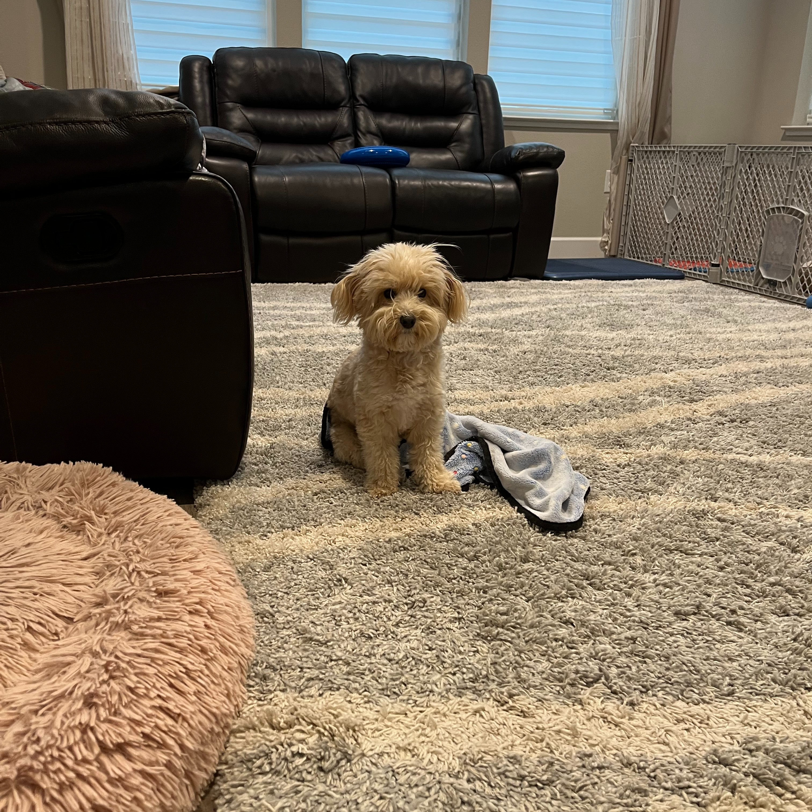
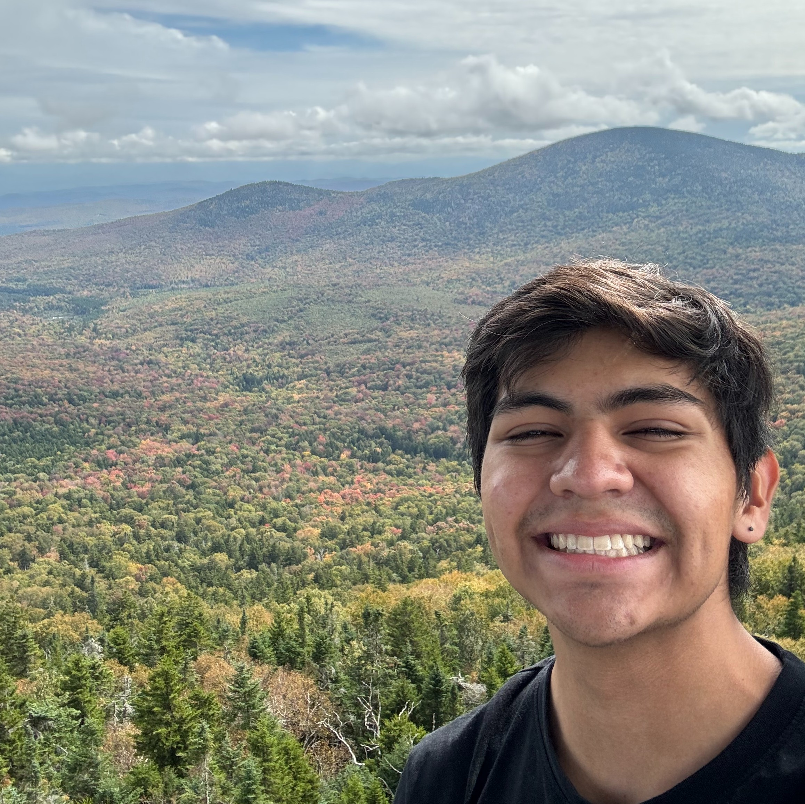
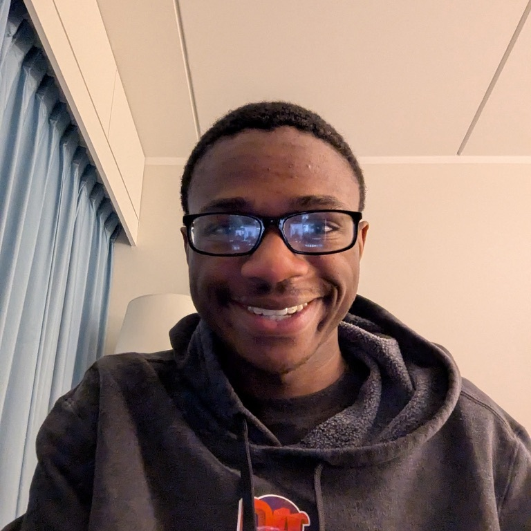
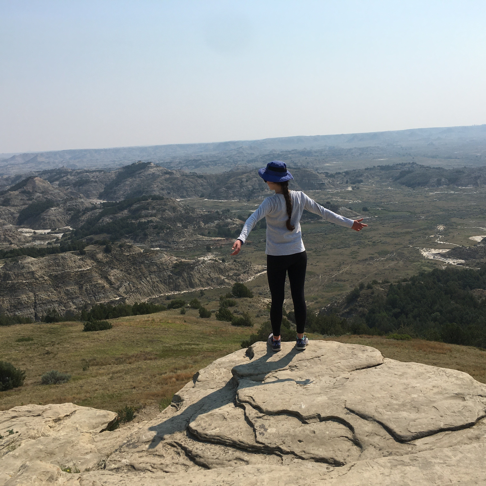
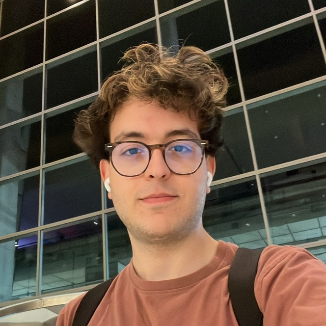
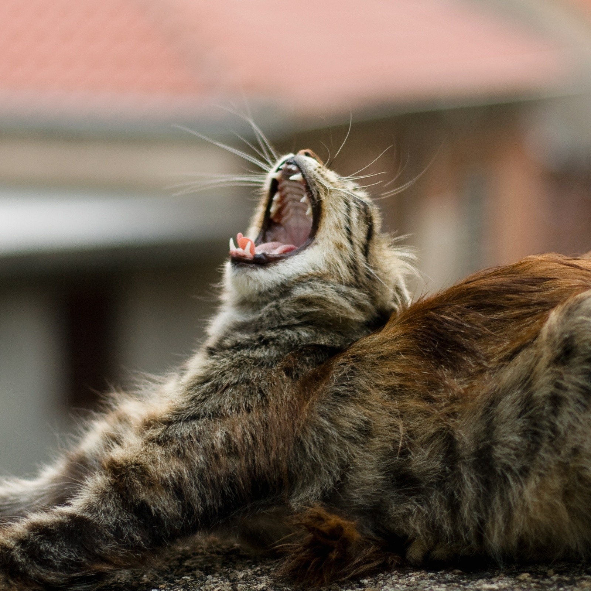
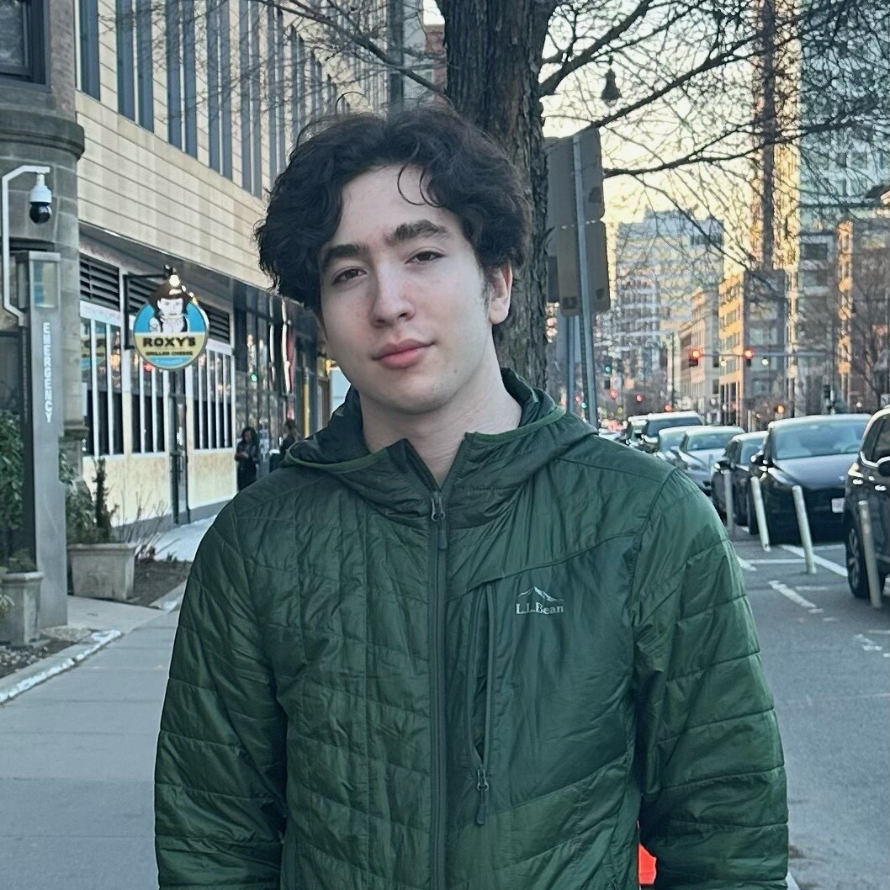
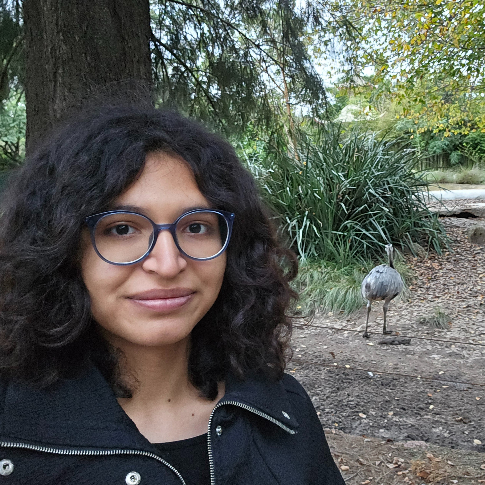
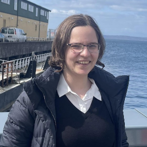
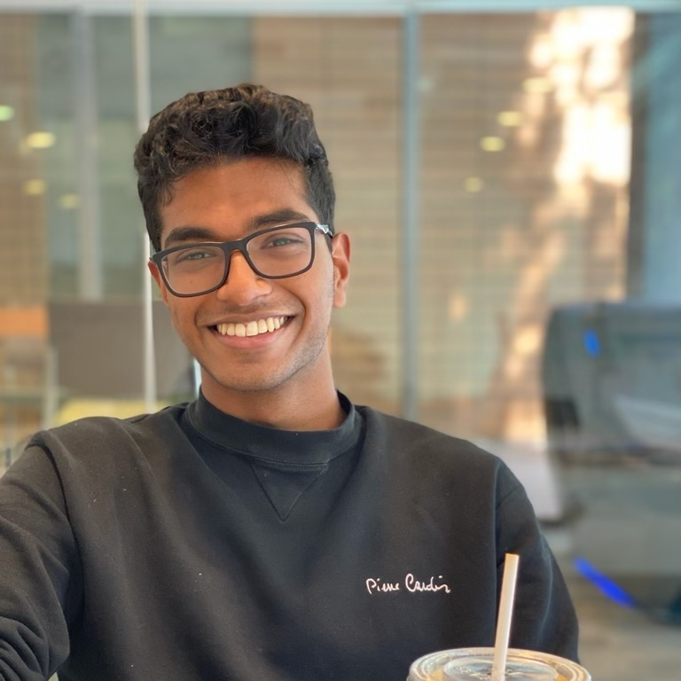

Meet the Beasties

Year: 2027?
Major: being fuzzy
"I’m a local fluffy ball of chaos, feel free to hug me and give me headpats but please be gentle when interacting with me. I may or may not be created by one of the other beasties, and so share interests and hobbies with that one"

Year: 2026
Major: 8 + 6-1 (physics + computer science), minor in 21M (music)
"puzzles are my entire personality. also much love for quantum and music and being in random places."

Year: hahaha we'll see
Major: 21E -- 6 + CMS (computer science + comparative media studies)
"Perennially reading "An Unkindness of Ghosts" and having too many media takes. May or may not spend too much time thinking about FRED DESK. 🇵🇷 🇵🇷 🇵🇷"

Year: 2026
Major: 6 + WGS (computer science + women's & gender studies)
"I LOVE NERTZ!!!! i enjoy listening to music (jo yuri and iz*one! <3), reading good (and bad ;-;) fic, cool graphs and data, bread, & spending time with family and friends. my favorite quote: "how lucky i am to have something that makes saying goodbye so hard" - winnie the pooh, in the voice of my oldest sister zizi"

Year: 2026
Major: 6-4 (computer science)
"hi! when i’m not busy with dance practice, i love watching horror/romcom movies and anime (any love is war fans??), playing badminton, and watching speedruns of games i’ve never heard of before. insta: @izarprobknows"

Year: 2027
Major: 6-3 (computer science), minor in 11 (urban studies and planning)
"Hi, I'm Joshua! Love playing video games, hanging out with friends, playing board games, and tinkering with computers in my free time! You can follow me at @thejokister on Instagram."

Year: 2025.5
Major: 2 + 17 (meche + political science/global studies)
"hi i'm kano! i like to make things, break things, and play with things. kurt vonnegut is my current fav author: cat's cradle and slaughterhouse-five are excellent books. i enjoy many many quotes, this week's notable one being "the same hot water that softens the potato also hardens the egg." this is my ig, where i'm most active: @pakaprow. this is my twitter, where i'm most dangerous: @bbywch. thank you."

Year: 2028
Major: 1-12 (climate system science and engineering), also hoping to minor in public policy
"I am on the MIT cross country and track teams. I consider myself passionate about environmental and social issues. I am a crazy plant lady so I love gardening, as well as cooking and eating plant-based food. I also love crochet, wordplay, and the ukulele."

Year: 2027
Major: 6-9 (computation and cognition), minor in 8 (physics)
"Hiiii if you ever wanna trap me just throw me into a really good manhwa"
Year: 2026
Major: 2A + 8-flex (mechanical engineering + physics)

Year: 2028
Major: 6-9 + 24 (computation and cognition + linguistics)
"I am an evil beast >:3. I am one of the miauest miau of all the miaus. I can meow in 6 languages. And trust me... I certainly will."
Year: 2027
Major: 20 (biological engineering), probably 21T (theater arts)
"hey hey im ming! i do art sometimes (painting and tape art) and need to get back into anime! find me on discord @mingming9620 or insta @mngmng.ii~ i am a PLEASURE educator on floor so come find me if you ever need to chat <33"

Year: 2025
Major: 6-9 (computation and cognition)
"hi i'm rai! resident party poster designer here. always down to make cursed things in photoshop :)) i'm also on gamescomm (hmu to play overcooked, moving out, or castle crashers!!) and swagcomm (plz stop me or i Will make PEMIS merch). u can see what i'm up to on insta @raiccoon altho lately i've only been posting ADT and my girlfriend oops"

Year: 2026? (probably 2027)
Major: 6-3 (computer science)
"hello!! hobbies/interests.... i'm in vgo (trumpet player) and i am also generally a bit of a Video Gamer (mainly singleplayer games though definitely not competitive stuff). been playing a lot of minecraft and yakuza recently, might have changed by the time u read this. also into reading litrpg slop and cultivation slop and such (currently reading dungeon crawler carl at the time of writing this bio). i dont have social media sorry"

Year: 202?
Major: 6-3 (computer science)
"Hi, I'm Riley! Outside of computer science, my interests include linguistics, music, and fire spinning. I love to listen to people talk about things they're passionate about, and I'm almost always down to get roped into whatever shenanigans people are getting up to."

Year: 2026
Major: 18 (mathematics)
"I'm a math major who took a gap year to study Korean before coming to MIT. My hobbies include cooking, blogging, learning Japanese, and teaching friends how to play Nertz! Personal website: https://www.mit.edu/~anser."

Year: 2027
Major: 18 + 6-4 (mathematics + computer science)
"Hi! I'm Sofia. I like sailing, ice skating, food, traveling, coding, and doing pretty much anything fun with friends. Instagram: @sofia.domingc though I don't post much."

Year: 2025
Major: 2A (mechanical engineering - manufacturing)
Alums

Year: 2019
Major: 8 (physics), minor in computer science
"I love cuddles and passionately yelling at people about physics"
Year: 2017
Major: 6-3 (computer science)

Year: 2024
Major: 18C + 24-2 (math with computer science + linguistics)
"hi I'm heidi! outside of academics I like doing theater tech, watching movies, and learning about random things like airline logistics"
Year: 2020
"Had way too much fun with cruft from the loading dock and ate way too much bad free food Had a blast overall and hope the vlla & speaker system Willy and I setup lives on"
Year: 2024
Major: 6-3 (computer science)

Year: 2024
Major: 6-3 (computer science)

Year: 2024
Major: 10B + 7 (chemical-biological engineering + biology)
"I guess I like a lot of things - I enjoy running + cycling, baking, reading and writing, playing music... aka down to do or try pretty much whatever! Favorite recent read is definitely Anthony Bourdain's Kitchen Confidential (+ all of his shows). Although my all time favorite thing to watch is definitely old Top Gear UK. Instagram: @jose.phos.phine."

Year: 2014
Major: 2 (mechanical engineering)
"Hi! I had a great time living on Beast for all four years of undergrad. I'm currently working as an engineer for the government. My undergrad thesis was supposed to be about archer fish (in my profile) but unfortunately they all died during Winter Break. On another note... in my free time I play video games (just like in undergrad lol) and read light novels. I love Miyazaki films especially Howl's Moving Castle and Spirited Away. I hope everyone enjoys their life at MIT and treasure the time you spend with your friends there :)"

Year: 2024
Major: 18 + 6-4 (mathematics + computer science)
"I like science, tennis, and words. I'm easy to find on messenger! Goodreads:
144931661-kaivu-hariharan"

Year: 2022
Major: 6-14 (computer science and economics)
"NYC finance bro and EDM bro"

Year: 2024
Major: 24-1 + 8-flex (philosophy + astrophysics)
"hello, i am keaten! i have a companion dog whose name is tiptoe, and i enjoy reading a lot (fantasy, philosophy, scifi), walking, having good conversations, cooking vegan foods, traveling and meeting people, and dancing :)"
Year: 2015
Major: 6-3 (computer science)
"I managed to barely survive and graduate, and now I've been working at Google for 5 years. Currently enjoying remote work, though it's made me into a bit of a hermit. My years on Beast were some of the best (and hardest) years of my life, so, uh, make the most of it!"

Year: 2022
Major: 21S -- 5 + CMS (chemistry + comparative media studies)
Year: 2023 + MEng
Major: 6-1 + 18 (computer science + mathematics)
Year: 2020
Major: 9 (brain and cognitive sciences), minor in 7 (biology)

Year: 2024
Major: 20 (biological engineering), minors in 11 + E&S (urban studies and planning + environment & sustainability)
"Hi! I'm a proud beast alum who is currently traveling with MISTI and loves music, the outdoors (in small doses), and yapping :)"

Year: 2024
Major: 6-9 (computation and cognition), minors in 18 + 24-2 (mathematics + linguistics)

Year: 2017
Major: 24-2 (linguistics)
"Howdy! Linguistics major-turned-high-school-physics-teacher here, musician and writer, obsessed with music, languages, and books. Avid concertgoer, traveler, and hiker. Usually a little bit confused and always very excited!"

Year: 2023
Major: 9 + 6-3 (brain and cognitive sciences + computer science and engineering)
"I love to play viola, create content, and otherwise explore the great indoors. I'm also one of the people developing and maintaining this version of the Beast website! Feel free to say hi on Instagram: @teresa_gao."
Year: 2018
Major: 6-3 (computer science) and one class away from a minor in CMS!
"I loved living on Beast because it was a place where I felt very free to become myself and meet and have fun with friends turned family. I did an M.Eng and kept visiting Beast. I am currently a software engineer living in the bay area in CA and Wolf Alice is my favorite band. at MIT, i co-led MIT Design for America, was an FLP and Camp Kesem counselor, helped plan MakeMIT hardware hackathon for 2 years, and danced in MIT Dance Troupe and MIT Bhangra. I loved taking project-based classes and HASS classes and being part of the Lifelong Kindergarten group at MIT Media Lab."

Year: 2023
Major: 6-2 (computer science)
"I am a person who likes playing video games and wasting time on youtube"

Year: 2018
Major: 16 (aerospace engineering)


Year: 2024
Major: 5 (chemistry)
"I like to talk with people, cook and puzzles. Most likely place to find me at 8am is in the kitchen making banana pancakes (some would argue it is a banana omelette) talking with people passing by, I will be very grateful if you make the kitchen smell like something good like coffee. You can ask me to try some desserts you probably never tried before"